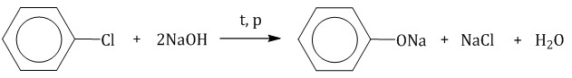
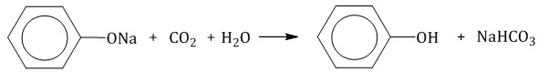
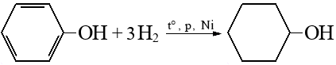

Определение
Фенолы — органические вещества, молекулы которых содержат ароматический цикл, связанный с одной или более гидроксильных групп.
Примеры
Физические свойства
Твёрдое кристаллическое бесцветное вещество с резким запахом. Сильно ядовитое.
tплав=43°, tкип=181°
Незначительно растворяется в воде.
Получение
- В промышленности: из каменноугольной смолы.
- Кумольный способ (окисление изопропил бензола с разложением продуктов серной кислотой):
- Получение из галогенаренов:


Химические свойства
- Взаимодействие с Na и NaOH:
- Взаимодействие с FeCl3: качественная реакция, осадок фиолетового цвета
- Бромирование:
- Нитрирование:
- Гидрирование:

К содержанию